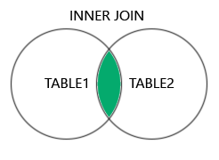
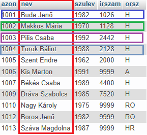
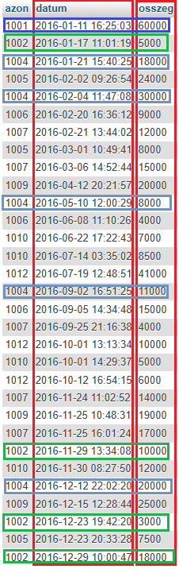
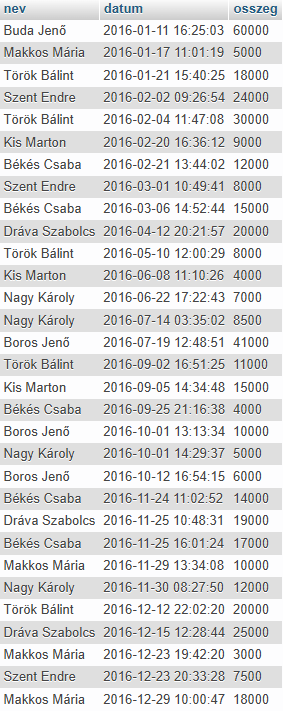
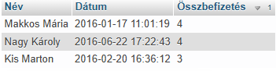

A INNER JOIN utasítás csak azokat a sorokat (rekord) adja vissza, amelyek mindkét táblában egyező értékeket tartalmaznak.

A visszaadott adatokat egy eredménytáblában, az úgynevezett eredményhalmazban tárolja a rendszer.
Innentől kezdve már minden SQL utasítás szabadon használható, mint egytáblás esetben.
SELECT ugyfel.nev, befiz.datum,
befiz.osszeg
FROM ugyfel
INNER JOIN befiz
ON ugyfel.azon = befiz.azon;



Látható, hogy az eredménytábla a kiválasztott mezőkből áll. Megtörtént a két tábla összekötése az azon mezők mentén.
SELECT ugyfel.nev
AS Név, befiz.datum
AS Dátum,
COUNT(befiz.osszeg) AS
Összbefizetés
FROM ugyfel
INNER JOIN befiz
ON ugyfel.azon = befiz.azon
GROUP BY Név
ORDER BY Összbefizetés
DESC
LIMIT 3
OFFSET 2;

Látható, hogy az eredménytábla a kiválasztott mezőkből áll. Megtörtént a két tábla összekötése az azon mezők mentén.